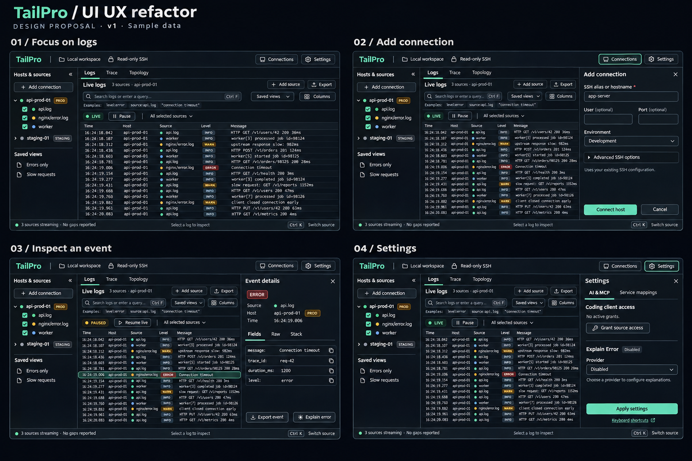

Mặc định gọn và rõ
Sidebar chỉ chứa host, nguồn và Saved Views. Search nổi bật. Bảng log dùng chiều cao còn lại; các form cấu hình đóng.
Bảng log là trung tâm. Kết nối, chọn nguồn và cài đặt xuất hiện khi cần, trong các panel có vị trí nhất quán. Bộ bàn giao thiết kế theo cấu trúc dự án Figma, lưu cục bộ; chưa thay đổi giao diện ứng dụng.
Ảnh mockup dùng dữ liệu giả lập, giữ theme tối và màu mint của TailPro. Nhấn ảnh để mở kích thước đầy đủ.

Sidebar chỉ chứa host, nguồn và Saved Views. Search nổi bật. Bảng log dùng chiều cao còn lại; các form cấu hình đóng.
Nút Add connection mở form bên phải. Host, user, port và môi trường rõ ràng; Advanced SSH thu gọn. Bấm Connect mới bắt đầu kết nối.
Chọn dòng mở Inspector và giữ vị trí đọc. Fields, Raw, Stack có tab riêng. Log nền vẫn được nhận; Resume live là hành động của người dùng.
AI & MCP và Service mappings nằm trong Settings. Chỉ một nhóm hiện tại một lúc. Grant, provider và consent giữ ngữ cảnh riêng.
| Hiện tại | Ảnh hưởng | Đề xuất |
|---|---|---|
| Form kết nối luôn mở | Tốn sidebar dù đang đọc log; nhiều input không liên quan đến thao tác hiện tại. | Sidebar cây compact; mở form bằng Add connection, chỉnh host qua menu. |
| Nhiều module phía trên LiveView | AI/MCP, discovery, mapping, Trace và Topology cạnh tranh không gian với log. | Tab Logs / Trace / Topology; cấu hình trong panel. |
| Viewport cố định 468px | Không tận dụng cửa sổ lớn; dễ cuộn cả trang. | Shell theo chiều cao cửa sổ, từng vùng cuộn độc lập. |
| Nhiều chữ 9–11px | Khó đọc trạng thái, nhãn và hướng dẫn. | Control 13–14px, log 12–13px; tăng tương phản và focus. |
| Help và Saved Views chung một khối | Khó nhận ra đâu là thao tác lưu/khôi phục, đâu là trợ giúp. | Saved Views là điều khiển riêng; cú pháp query mở qua Help. |
Căn cứ: src/app/main.tsx, styles.css và các component Connections, Sources, QueryBar, LiveView. Đây là đánh giá từ mã nguồn; chưa phải kết quả usability test với người dùng.
Luồng ban đầu: Add connection → Connect → Add source / Discover → chọn nguồn → Start → xem log. Chọn host, path hoặc Saved View không tự chạy nguồn hay cấp quyền.
| Khu vực | Cách mở | Nội dung và cách đóng |
|---|---|---|
| Sidebar trái | Nút thu/mở cạnh Hosts & sources | Host và nguồn đang đọc, checkbox scope, Saved Views. Thu gọn còn thanh 48px, có nút mở lại và tooltip. |
| Connection panel | Add connection hoặc Connections | Form thêm/quản lý host. Advanced SSH thu gọn. Close / Cancel / Escape đóng, không disconnect host. |
| Sources panel | Add source | Host/môi trường được ghi rõ. Nhập file hoặc Discover với scope; chọn rồi Start tường minh. Không hiện cùng Inspector. |
| Inspector | Click dòng hoặc Enter | Fields / Raw / Stack; Export / Explain theo event. Đóng giải phóng detail request, giữ query và paused viewport. |
| Settings | Nút Settings trên header | AI & MCP, Service mappings và trợ giúp bàn phím. Đóng xóa secret/credential đang hiển thị và consent tạm. |
| Logs / Trace / Topology | Tab trên workspace | Dùng chung source scope; giữ query và vị trí đọc khi quay lại Logs. Chuyển tab không dừng reader. |
Mỗi lúc chỉ một panel phụ bên phải, rộng khoảng 440px; Settings tối đa 520px. Ở cửa sổ hẹp ≤1024px, dùng sheet dạng dialog tối đa 92vw. Escape đóng lớp trên cùng rồi trả focus về nút mở. Chuyển panel phải xử lý draft và hủy công việc phụ đúng vòng đời.
Ctrl+K chuyển host/source; Ctrl+F focus query; Space pause/resume khi bảng có focus; Enter mở event; Escape đóng panel. Input giữ cách gõ thông thường. Trạng thái có chữ/icon ngoài màu, focus luôn nhìn thấy; modal giữ focus bên trong và trả về opener khi đóng.
Spacing 4 / 8 / 12 / 16 / 24 / 32px. Control cao 36–40px, radius 6px; icon button tối thiểu 32px. Header 52px, sidebar khoảng 248px, log row 36px. Sans cho điều khiển, monospace cho log.
Contrast text mục tiêu ≥4.5:1; cần kiểm tra khi triển khai. Không dùng màu làm dấu hiệu duy nhất. Chỉ lưu sở thích giao diện an toàn, không lưu approval hoặc secret.
Giữ virtualization, bounded cache, generation/cancel, source health, Production labels, host-key checks, redaction và consent hiện có. Không thêm automated tests theo quy định repo. Chưa sửa src, Rust, dependencies hoặc trạng thái implementation.
Bộ thiết kế cục bộ theo cách tổ chức Figma; không có file Figma native. Mở index.html để xem; PNG và JSON mở độc lập, không cần build hay kết nối mạng.